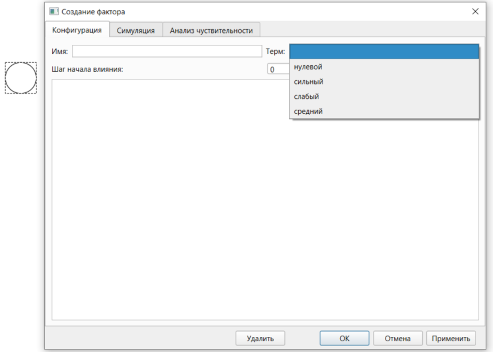
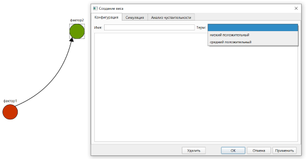

1. Построение НКК графическим методом осуществляется на вкладке построения НКК графическим методом. Для перехода на эту вкладку с другой вкладки необходимо нажать на заголовок «Граф».
2. Основное пространство на вкладке занимает интерактивная область редактирования графа НКК. Работа с данной областью осуществляется в двух режимах: создания элементов НКК и изменения значений элементов НКК. Переключение между режимами выполняется при помощи кнопки в нижнем левом углу вкладки. В случае, если кнопка имеет надпись «Режим создания», включен режим создания элементов НКК. В случае, если кнопка имеет надпись «Режим изменения значений», включен режим изменения значений элементов НКК.
3. Режим создания элементов НКК позволяет выполнять следующие действия:
3.1. Создание фактора:
3.1.1. При нажатии левой кнопкой мыши на свободном пространстве происходит создание фактора, представляемого в виде круга с центром в точке нажатия. При создании фактора происходит открытие окна фактора:

3.1.2. При создании фактора его окно позволяет задать имя, терм (из списка термов фактора), и заметки фактора, а также шаг начала влияния фактора на систему. Поле заметок работает аналогично полю заметок НКК. При нажатии кнопки «Удалить», кнопки «Отмена» или кнопки закрытия окна в момент создания фактора фактор не будет создан, а его отображение будет удалено. При нажатии кнопки «ОК» в момент создания фактора фактор будет создан, а его окно закрыто. При нажатии кнопки «Применить» в момент создания фактора фактор будет создан, а его окно останется открытым и перейдёт в режим редактирования фактора.
3.1.3. В случае, если терм фактора не задан, фактор не имеет цвета. В случае, если терм фактора задан, фактор имеет цвет терма.
3.1.4. Имя фактора отображается над представляющей его окружностью.
3.1.5. При нажатии на фактор левой кнопкой мыши и перемещении мыши, фактор будет перемещён в точку, в которой левая кнопка мыши будет отпущена.
3.2. Создание связи:
3.2.1. При нажатии правой кнопкой мыши сначала на фактор, из которого связь должна исходить, а потом на фактор, в который связь должна входить, будет создана соответствующая связь, которая будет представлена в виде стрелки между соответствующими факторами. При этом будет открыто окно связи:

3.2.2. При создании связи её окно позволяет задать имя, терм (из списка термов связи), и заметки связи. Поле заметок работает аналогично полю заметок НКК. При нажатии кнопки «Удалить», кнопки «Отмена» или кнопки закрытия окна в момент создания связи связь не будет создана, а её отображение будет удалено. При нажатии кнопки «ОК» в момент создания связи связь будет создана, а её окно закрыто. При нажатии кнопки «Применить» в момент создания связи связь будет создана, а её окно останется открытым и перейдёт в режим редактирования связи.
3.2.3. В случае, если терм не задан, связь окрашивается чёрным цветом. В случае, если терм связи задан, связь имеет цвет терма.
4. Режим изменения значений элементов НКК позволяет выполнять следующие действия:
4.1. При нажатии на фактор правой кнопкой мыши открывается окно фактора, в режиме редактирования, который имеет следующие особенности по сравнению с режимом создания:
4.1.1. При нажатии кнопки «Отмена» или закрытии окна фактора изменения отменяются, а фактор остаётся.
4.1.2. Заголовок окна содержит название фактора.
4.2. При нажатии на связь правой кнопкой мыши открывается окно связи, в режиме редактирования, который имеет следующие особенности по сравнению с режимом создания:
4.2.1. При нажатии кнопки «Отмена» или закрытии окна связи изменения отменяются, а связь остаётся.
4.2.2. Заголовок окна содержит название связи.
5. В каждом из рассмотренных режимов могут быть выполнены следующие действия:
5.1. При нажатии средней кнопкой мыши (колесом мыши) на любой точке интерактивной области и её (мыши) последующем перемещении над отображением графа НКК будет выполнен параллельный перенос вслед за мышью.
5.2. Работа с масштабом:
5.2.1. При каждом вращении колеса мыши вперёд масштаб отображения графа НКК увеличивается в 1,15 раза.
5.2.2. При каждом вращении колеса мыши назад масштаб отображения графа НКК уменьшается в 1,15 раза..
5.2.3. Текущий масштаб отображается в нижней части вкладки.
5.2.4. При нажатии на кнопку «Масштабировать до 100%» отображение графа НКК будет приведено к масштабу 100% (начальному масштабу).